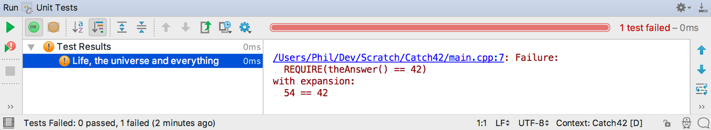

Catch2 介紹
介紹一下最近有在使用的一個 C++ test framework, Catch2，它對自己的描述是:
A modern, C++-native, header-only, test framework for unit-tests, TDD and BDD - using C++11, C++14, C++17 and later (or C++03 on the Catch1.x branch)
我主要的用途是做一些 C++ 小程式的簡單驗證，因此簡單易用是我首要的選擇條件，而 Catch2 應該是目前找的到最好的選擇，例如這是個 Huffman coding 的測試代碼:
TEST_CASE("HuffmanEncoding") {
vector<Symbol> symbols{
{'a', 8.17}, {'b', 1.49}, {'c', 2.78}, {'d', 4.25},
{'e', 12.7}, {'f', 2.23}, {'g', 2.02}, {'h', 6.09},
{'i', 6.97}, {'j', 0.15}, {'k', 0.77}, {'l', 4.03},
{'m', 2.41}, {'n', 6.75}, {'o', 7.51}, {'p', 1.93},
{'q', 0.10}, {'r', 5.99}, {'s', 6.33}, {'t', 9.06},
{'u', 2.76}, {'v', 0.98}, {'w', 2.36}, {'x', 0.15},
{'y', 1.97}, {'z', 0.07},
};
HuffmanEncoding(symbols);
REQUIRE(symbols['a' - 'a'].code == "1110");
REQUIRE(symbols['e' - 'a'].code == "100");
REQUIRE(symbols['t' - 'a'].code == "000");
REQUIRE(symbols['z' - 'a'].code == "001001000");
}
可以看到代碼非常地簡潔而易懂，你只要學怎麼用 TEST_CASE 及 REQUIRE 就好了。
如何使用 Catch
中文的介紹可以參考 “C++ 的单元测试工具 —— Catch | 时习之”，只是關於如何 #include "catch.hpp" 的部分我覺得描述的不是很精確，建議可以讀一下 “Why do my tests take so long to compile?"。
真的很介意 compile time 受到影響的人，可以考慮關掉一些沒用到的功能來加速編譯: Catch2/configuration。
Catch2 的原理
神奇的 REQUIRE
有用過其他的 C++ test framework 例如 googletest 的人，應該會對 Catch 的 REQUIRE 感到好奇:
為什麼 googletest 需要使用較不自然的 ASSERT_EQ(a, b), ASSERT_NE(a, b) 而 Catch 只需要寫 REQUIRE(a == b) 及 REQUIRE(a != b)？
拆解表達式 (Decomposing an expression)
考慮下列這個有問題的 Factorial 實作及它的測試代碼:
int Factorial( int number ) {
return number <= 1 ? number : Factorial( number - 1 ) * number; // fail
}
TEST_CASE( "Factorial of 0 is 1 (fail)", "[single-file]" ) {
REQUIRE( Factorial(0) == 1 );
}
REQUIRE(Factorial(0) == 1); 會輸出下列的結果:
010-TestCase.cpp:14: failed: Factorial(0) == 1 for: 0 == 1
這表示 REQUIRE 需要從 Factorial(1) == 1 拆解出下列五個資訊：
- 整個表達式 “Factorial(0) == 1” 的字串值
- 表達式左邊 Factorial(0) 的結果，也就是 0
- 使用的 operator, 也就是 “==”
- 表達式右邊 1 的值，也就是常量 1
- 表達式的結果，在這個例子是 false
也就是說 Catch2 必須在 compile time 拆解這個表達式，這裡需要用到一些 template metaprogramming 的技巧。
REQUIRE
REQUIRE 是用 macro 來定義的，所以整個表達式的字串值可以簡單用 stringification 拿到。
#define REQUIRE( ... ) INTERNAL_CATCH_TEST( "REQUIRE", Catch::ResultDisposition::Normal, __VA_ARGS__ )
#define INTERNAL_CATCH_TEST( macroName, resultDisposition, ... ) \
do { \
Catch::AssertionHandler catchAssertionHandler( macroName, CATCH_INTERNAL_LINEINFO, CATCH_INTERNAL_STRINGIFY(__VA_ARGS__), resultDisposition ); \
INTERNAL_CATCH_TRY { \
CATCH_INTERNAL_SUPPRESS_PARENTHESES_WARNINGS \
catchAssertionHandler.handleExpr( Catch::Decomposer() <= __VA_ARGS__ ); \
CATCH_INTERNAL_UNSUPPRESS_PARENTHESES_WARNINGS \
} INTERNAL_CATCH_CATCH( catchAssertionHandler ) \
INTERNAL_CATCH_REACT( catchAssertionHandler ) \
} while( (void)0, false && static_cast<bool>( !!(__VA_ARGS__) ) ) // the expression here is never evaluated at runtime but it forces the compiler to give it a look
// The double negation silences MSVC's C4800 warning, the static_cast forces short-circuit evaluation if the type has overloaded &&.
Catch::Decomposer
而 2, 3, 4 的部分就要靠 Catch::Decomposer，這裡用的
template metaprogramming 技巧叫作 expression template。
struct Decomposer {
template<typename T>
auto operator <= ( T const& lhs ) -> ExprLhs<T const&> {
return ExprLhs<T const&>{ lhs };
}
auto operator <= ( bool value ) -> ExprLhs<bool> {
return ExprLhs<bool>{ value };
}
};
Decomposer 用 <= 跟表達式的左邊結合變成 ExprLhs<T const &>，ExprLhs 是個 C++ template:
ExprLhs
template<typename LhsT>
class ExprLhs {
LhsT m_lhs;
public:
explicit ExprLhs( LhsT lhs ) : m_lhs( lhs ) {}
template<typename RhsT>
auto operator == ( RhsT const& rhs ) -> BinaryExpr<LhsT, RhsT const&> const {
return { compareEqual( m_lhs, rhs ), m_lhs, "==", rhs };
}
auto operator == ( bool rhs ) -> BinaryExpr<LhsT, bool> const {
return { m_lhs == rhs, m_lhs, "==", rhs };
}
template<typename RhsT>
auto operator != ( RhsT const& rhs ) -> BinaryExpr<LhsT, RhsT const&> const {
return { compareNotEqual( m_lhs, rhs ), m_lhs, "!=", rhs };
}
auto operator != ( bool rhs ) -> BinaryExpr<LhsT, bool> const {
return { m_lhs != rhs, m_lhs, "!=", rhs };
}
template<typename RhsT>
auto operator > ( RhsT const& rhs ) -> BinaryExpr<LhsT, RhsT const&> const {
return { m_lhs > rhs, m_lhs, ">", rhs };
}
template<typename RhsT>
auto operator < ( RhsT const& rhs ) -> BinaryExpr<LhsT, RhsT const&> const {
return { m_lhs < rhs, m_lhs, "<", rhs };
}
template<typename RhsT>
auto operator >= ( RhsT const& rhs ) -> BinaryExpr<LhsT, RhsT const&> const {
return { m_lhs >= rhs, m_lhs, ">=", rhs };
}
template<typename RhsT>
auto operator <= ( RhsT const& rhs ) -> BinaryExpr<LhsT, RhsT const&> const {
return { m_lhs <= rhs, m_lhs, "<=", rhs };
}
auto makeUnaryExpr() const -> UnaryExpr<LhsT> {
return UnaryExpr<LhsT>{ m_lhs };
}
};
ExprLhr 利用 operator overloading 來知道是用那個 operator 跟表達式的右邊做運算，最後把整個表達式轉換成一個 BinaryExpr。
BinaryExpr
template<typename LhsT, typename RhsT>
class BinaryExpr : public ITransientExpression {
LhsT m_lhs;
StringRef m_op;
RhsT m_rhs;
public:
BinaryExpr( bool comparisonResult, LhsT lhs, StringRef op, RhsT rhs )
: ITransientExpression{ true, comparisonResult },
m_lhs( lhs ),
m_op( op ),
m_rhs( rhs )
{}
};
之前我們提到的 2, 3, 4, 5 的資訊就存在 BinaryExpr 的 m_lhs, m_op, m_rhs, 及 ITransientExpression 裡面。
搭配 CLion 使用
另外我還蠻推薦使用 JetBrains 的 C++ IDE: CLion，它目前有內建 Catch2 的支援，用它執行測試非常地簡單方便:
